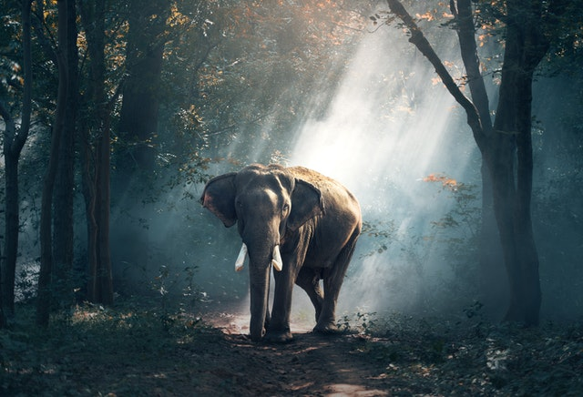
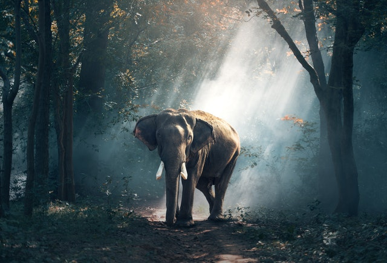

Elephants
 

The elephants are the large mammals forming the family Elephantidae in the order Proboscidea. Three species are currently recognised: the African bush elephant (Loxodonta africana), the African forest elephant (L. cyclotis), and the Asian elephant (Elephas maximus). Elephants are scattered throughout sub-Saharan Africa, South Asia, and Southeast Asia. Elephantidae is the only surviving family of the order Proboscidea; other, now extinct, members of the order include deinotheres, gomphotheres, mammoths, and mastodons.
All elephants have several distinctive features, the most notable of which is a long trunk (also called a proboscis), used for many purposes, particularly breathing, lifting water, and grasping objects. Their incisors grow into tusks, which can serve as weapons and as tools for moving objects and digging. Elephants' large ear flaps help to control their body temperature. Their pillar-like legs can carry their great weight. African elephants have larger ears and concave backs while Asian elephants have smaller ears and convex or level backs.
Elephants are herbivorous and can be found in different habitats including savannahs, forests, deserts, and marshes. They prefer to stay near water. They are considered to be a keystone species due to their impact on their environments. Other animals tend to keep their distance from elephants while predators, such as lions, tigers, hyenas, and any wild dogs, usually target only young elephants (or "calves"). Elephants have a fission–fusion society in which multiple family groups come together to socialise. Females ("cows") tend to live in family groups, which can consist of one female with her calves or several related females with offspring. The groups are led by an individual known as the matriarch, often the oldest cow.